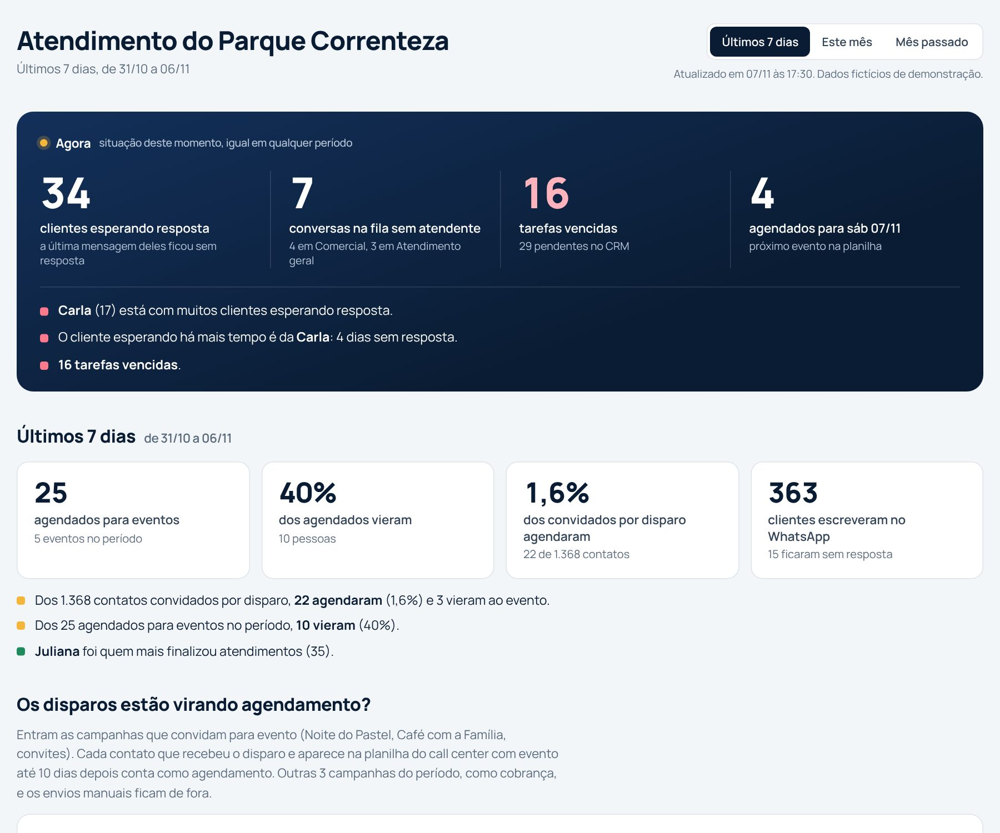

Automações e painéis para marketing, vendas e atendimento.
Ligo WhatsApp, CRM, ERP e planilhas para que o trabalho repetido aconteça sozinho e a gestão veja os números sem pedir para ninguém. São 6 projetos entregues em 2026, que leem cerca de 2.400 conversas por mês. Os painéis desta página são os de verdade, abertos com dados fictícios, e dá para clicar em tudo.
Trabalho com n8n, JavaScript, APIs REST, webhooks, MCP, Google Sheets e IA generativa.

Painel de atendimento de um parque aquático, que se atualiza sozinho ao longo do dia.
Casos em destaque
Cada caso começa pelo resultado. Os nomes de empresas e pessoas são inventados; a lógica e os números de escala são dos projetos reais.
Clube social, vendas pelo WhatsApp
O CRM que se preenche sozinho toda noite
Cerca de 350 negociações entraram no funil na primeira carga, sem ninguém digitar um card.
O problema. Os consultores passavam o valor do título pelo WhatsApp, mas o funil de vendas ficava vazio: ninguém tinha tempo de criar e mover card. A diretoria não sabia quantas negociações estavam abertas.
O que eu fiz. Um fluxo que roda toda noite, lê as conversas do dia, encontra quem recebeu o valor, entende em que pé está a negociação e cria ou move o card no nome do consultor certo, com o valor que foi realmente oferecido.
Como o fluxo funciona
Começa às 23:41ou por um link, quando alguém pede
Lê as conversaspela API do WhatsApp
Acha o valor oferecidoignora preço riscado e parcelas
Classifica a conversapagou, achou caro, vai pensar ou sumiu
Confere o pagamentono sistema de matrículas
Cria ou move o cardsem desfazer o que o consultor mexeu
Teste você mesma: seis conversas de exemplo, prontas para a rodada da noite.
Valor real no card. Entra o desconto que o consultor deu, não o preço de tabela.
Nada é sobrescrito. Card movido à mão fica onde o consultor colocou.
Um mês de histórico organizado já na primeira carga.
Loteamentos, dia de lançamento
Um ranking ao vivo para o dia do lançamento
Na TV da sala de vendas, corretores e call center acompanham a disputa por agendamentos em tempo real, sem esperar relatório.
O problema. No dia do lançamento, o time de vendas não pode esperar o relatório do fim do dia. Precisa ver agora quem está agendando e quanto falta para subir no pódio.
O que eu fiz. Um painel que lê a planilha de agendamentos no Google Sheets e se atualiza em tempo real, que o supervisor colocava na TV para manter a equipe engajada. Tem um pódio para os corretores e outro para o call center, o total de cada dia e uma aba para cada empreendimento. Embaixo do pódio, o painel diz quantos agendamentos faltam para tirar o 3º lugar, e um lugar vazio vira convite: pode ser você.
Quatro empreendimentos, uma tela. Cada um na sua aba.
Duas equipes, dois pódios. Corretores e call center não disputam entre si.
Quanto falta para o pódio aparece para quem está logo atrás.
Grupo de empresas, área financeira
Um painel financeiro que qualquer sócio entende em um minuto
O topo do painel responde numa frase se o mês sobrou ou faltou dinheiro, com os totais batendo com a DRE oficial.
O problema. O ERP tinha todos os lançamentos, mas a DRE era uma tabela de códigos contábeis. Os sócios não conseguiam responder a pergunta mais simples: este mês sobrou ou faltou dinheiro, e por quê?
O que eu fiz. Uma página que lê a API do ERP, divide os lançamentos rateados entre centros de custo e responde em português logo no topo. Abaixo vêm a cascata do resultado, a conta "de cada R$ 100" e as contas vencidas agrupadas por pessoa.
Confere com a DRE oficial receitas, despesas e resultado, mês a mês.
Avisa quando não dá para confiar num mês com poucos lançamentos.
Sem planilha no meio. Lê direto da API, dentro do limite de consultas.
Grupo com quatro negócios, diretoria
Quatro empresas, uma tela para a diretoria
Vendas, recebimentos e atendimento dos quatro negócios num lugar só, com no máximo 15 minutos de atraso.
O problema. Loteamento, clube e parque aquático tinham cada um seu sistema e sua planilha. A reunião de segunda começava com uma hora de gente juntando números.
O que eu fiz. Um painel que se atualiza a cada 15 minutos, com o mesmo formato para todos os negócios e um sinal claro de quem está fora da meta.
Toque em um negócio para ver o resumo do mês. Receita dos últimos 6 meses.
Um formato só. Cada negócio responde as mesmas três perguntas.
Meta à vista. Batida, perto ou abaixo, sem precisar fazer conta.
Outros casos
Parque aquático, call center e campanhas
Qual campanha de WhatsApp traz gente de verdade
Cada campanha com a conta completa: quantos receberam, quantos agendaram e quantos apareceram no evento.
Os disparos são cruzados com a planilha do call center pelo telefone, em até 10 dias, e com a presença marcada no dia. A conta sai por campanha e por atendente.
Se uma automação para, o alerta chega por e-mail em até 1 hora, e na hora quando o erro acontece dentro do fluxo.
Automação que falha em silêncio é pior que nenhuma. O monitor confere de hora em hora se cada painel abre e se a rodada da noite aconteceu, avisa quando algo para e quando volta, e guarda 7 dias de histórico. O mesmo erro gera no máximo um e-mail por hora.
Aline M. sem retornoFábio N. achou caroGisele P. sem retornoHugo T. já pagouIvone C. sem interesse
Clube social, análise de conversas
Quem recebeu a proposta e sumiu, separado de quem disse não
318 contatos para religar, tirados de 2.000 conversas, sem incluir quem já tinha recusado.
A leitura acha a mensagem com o valor, olha só as últimas respostas do cliente e separa quatro grupos. "Hoje não consigo ir" não vira "sem interesse". Antes de entregar a planilha, revisei os casos que o sistema confundia.
Ver a lista de exemplo
amostra de 12 das 2.000 conversas
Cliente
Valor passado
Última resposta do cliente
Grupo
Como eu trabalho
Entendo a pergunta do negócioAntes da ferramenta: o que a gestão precisa decidir com isso?
Leio os dados de verdadeAPIs, planilhas e conversas reais, para achar onde a regra óbvia falha.
Simulo antes de gravarToda carga em massa passa por uma simulação aprovada antes de mexer no sistema.
Confiro com a fonte oficialNúmeros batidos com o relatório do sistema, centavo a centavo.
Deixo vigiadoAlertas e página de saúde, para a automação não falhar em silêncio.
Uso IA generativa como parceira de trabalho: para escrever e revisar código, analisar milhares de conversas e desenhar painéis que um leigo entende. As decisões de negócio e a conferência final continuam comigo.